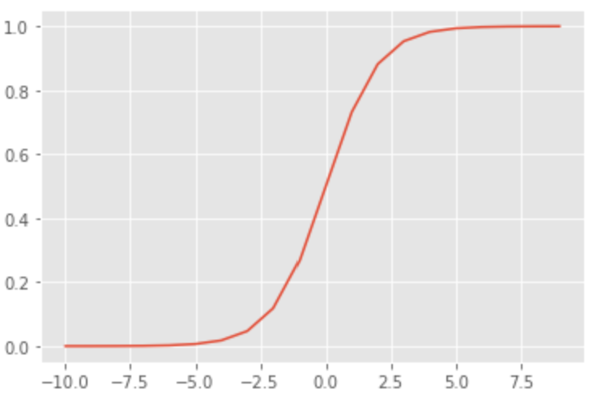

推荐模型:从逻辑回归到POLY2到FM再到FFM
无论是基于内容的推荐算法，还是协同过滤算法，它们都只用到了用户和物品之间的行为信息，所以能不能加入更多的信息，比如用户/物品本身的信息以及上下文信息来更好地指导推荐呢？
事实上，这正在把推荐问题转化为我们所熟悉的机器学习问题。具体来讲，给定训练集，利用训练集的特征和标签训练一个模型，然后用该模型指导推荐。
在之前讲解的协同过滤算法中，我们通常是预测某用户对于某些物品的打分，然后按照打分值从高到低排列物品，选择前几个推荐给用户。
而这里，训练好的模型会直接预测某用户是否会对物品产生正反馈（比如购买一件商品，观看一部电影等），若会，则将物品推荐给该用户。没错，这就是一个二分类问题。
接下来介绍几个经典的相关模型，有一些可能已经听说过，比如逻辑回归，嗯，就从它开始吧~
逻辑回归
逻辑回归(Logistic Regression, LR)用于分类任务，它使用sigmoid函数，将取值范围为全体实数的线性回归表达式$w_1x_1+w_2x_2+…+w_kx_k+b$映射到0和1之间：
1 | z=np.array(range(-10,10)) |

具体的分类规则是：设定一个0到1之间的阈值，当纵轴取值大于此阈值时为一类，否则为另一类。
注意：这里所讲的逻辑回归默认用于二分类问题，你也可以通过改造将其用于多分类问题，这是后话了。
逻辑回归的模型如下：
$$\hat{y}=\frac1{1+e^{-(X^TW+b)}}$$
其中，$X$是训练数据中的特征部分，$W$和$b$是模型要学习(优化)的参数。
假设训练集共$n$个特征，那么待优化的参数共$n+1$个。
于是，对于0和1两种类别，有如下结果：
$$p(y=1)=\hat{y}$$
$$p(y=0)=1-\hat{y}$$
综合两式，得：
$$p(y|\hat{y})=\hat{y}^(1-\hat{y})^{1-{y}}$$
上式表明，在预测概率为$\hat{y}$的前提下，样本的类别为$y$的概率为$p(y|\hat{y})$.
每一个样本都有自身得类别标签$y^i$，而且都可以通过模型预测得到1个对应的$\hat{y}^i$.
接下来求解$W$和$b$.
由极大似然估计，将每个样本对应的$p(y_i|\hat{y}_i)$连乘，得到似然函数：
$$L=\prod_{i=1}^{m}p(y^i|\hat{y}^i)=\prod_{i=1}^{m}{\hat{y}^i}^{y^i}{(1-{\hat{y}}^{i})}^{1-y^i}$$
其中$m$为训练样本总数。
对上式取对数，得：
$$lnL=\sum_{i=1}^{m}(y^{i}log{\hat{y}}^i+(1-y^i)log(1-{\hat{y}}^i))$$
我们要求解使得上式最大化时得参数$W$和$b$，那么对上式加个负号就把最大化目标变成了最小化目标，在加一个系数$\frac1m$不影响最终的优化结果，于是目标函数可以写成下面这个样子：
后续内容请移步下方微信链接阅读（不想再调一遍数学公式的格式了orz~~）